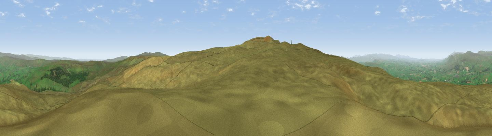

Bleatapow Hill
#5044 in England · top 8% of its area beats it · near HartleyWhere it is
The exact computed spot (NY 82779 07530). Click the marker for map links.
The view, rendered

A 360° render of this exact spot computed from the terrain model, tree cover and land cover — summer colours, afternoon light, calibrated against photographs of famous viewpoints. Real trees, hedges and buildings will differ in detail.
The panorama
Grey silhouette: terrain skyline in each direction (720 bearings, Earth curvature and refraction included). Dashed green: skyline with trees (+15 m) and buildings (+8 m) as obstacles. Blue strip: how far the ground is visible on each bearing.
Where the view opens
Wedge length = distance to the farthest visible ground on that bearing (vegetation-aware). Rings at 10, 25 and 50 km.
What fills the view
95% grassland · 4% woodland ·
Angular shares of the visible panorama (visual magnitude), not map area. Landscape diversity 0.10 (0–1 Shannon).
Key numbers
More beautiful places nearby
The staircase of upgrades: each row has a higher view potential than everything closer. Driving times are estimates from straight-line distance, calibrated against real road routing — check an actual route before setting out.
| Place | Direction | Drive | Score |
|---|---|---|---|
| Viewpoint near Hartley | S · 1 km | ~4 min | 71.6 |
| Viewpoint c10143_7703 | E · 3 km | ~6 min | 72.1 |
| Viewpoint c10212_7709 | NE · 4 km | ~9 min | 73.4 |
| Viewpoint near Nateby | SSW · 5 km | ~10 min | 75.0 |
| Viewpoint near Nateby | SSW · 6 km | ~13 min | 75.7 |
| Viewpoint c10024_7603 | SSW · 7 km | ~14 min | 76.9 |
| Calders | SW · 19 km | ~33 min | 79.0 |
| Whernside | SSW · 27 km | ~44 min | 79.9 |
54.46285, -2.26718 · source: osm peak · position refined by local search. Computed location — check access rights before visiting.